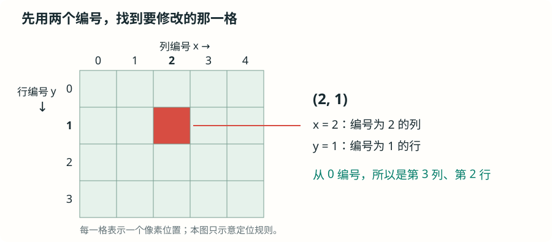
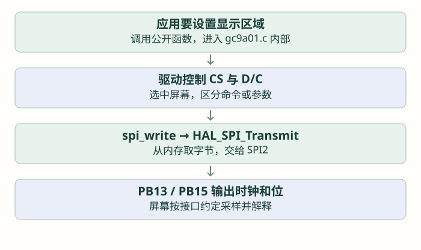
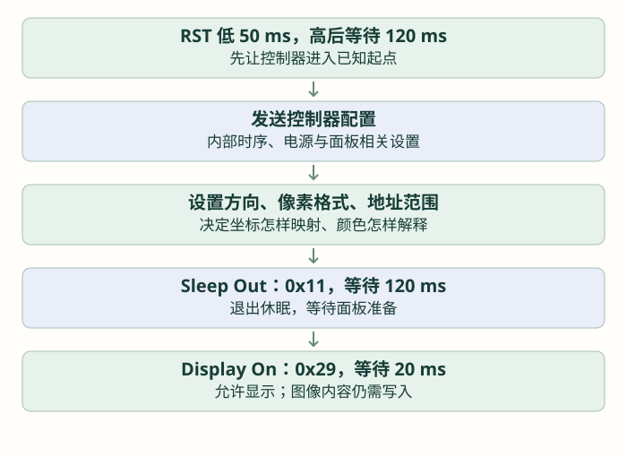

先驱动手表彩屏：GC9A01 与 RGB565
已经能通过 SPI 点亮 OLED，接下来读懂手表真正使用的彩屏驱动：从一条命令、一个像素开始，走到自己组织并显示一张矩形图像。
第 1 节 · 先把芯片、屏幕与驱动文件对上号
手表使用 GC9A01 控制的 240×240 圆形彩色 LCD。上一节的单色 OLED 实验帮助理解 SPI 和显示数据；这里每个像素需要表示颜色，初始化命令和像素格式都要按 GC9A01 重新对上。
使用 GalaxyCore · GC9A01A Rev.1.0 Preliminary（2019-07-02），由 Waveshare 托管厂商原文，共 192 页。下面页码对应此 PDF；若阅读器不定位，可搜索命令名或十六进制编号。
| 本节要解决什么 | 打开手册哪里 | 回到代码找什么 |
|---|---|---|
| 核对串行接口和 D/CX | §4.1.8～4.1.9，p.28～30 | write_cmd 与 write_data；D/CX 对应模块的 D/C |
| 从休眠走到显示开启 | §6.2.4，p.103；§6.2.10，p.110 | Init 中的 11、等待、29；结合模块要求核对顺序 |
| 确定方向与颜色格式 | §6.2.18，p.127；§6.2.22，p.135 | 36 48 与 3A 05；分别检查方向/BGR 和像素位数 |
| 组织 RGB565 发送字节 | §4.5.2，p.48 起 | write_data16、像素数组的两个字节 |
| 指定窗口并写像素 | §6.2.11～6.2.13，p.111～115 | SetWindow 的 2A、2B、2C；起止坐标及像素顺序 |
手册中的信号名称、命令和位定义用于解释控制器；本仓库引脚以 gpio.c、spi.c 和硬件接线为准。这里引用 Waveshare 托管资料不表示手表采用其成品模组。当前模组没有可确认的厂商接线文档，不额外指定其供电范围或排针顺序。
1.1 先确定位置：什么叫“寻址”？
假设要让屏幕中心的一小点变成红色。只发送“红色”还不够：屏幕有许多可以分别显示颜色的小点，也就是像素，控制器怎么知道要改哪一个？还必须告诉它位置。
可以把这些位置想成方格纸，横着排成行，竖着排成列。给每一列、每一行编号，就能用两个数找到一个位置：x 表示列编号，y 表示行编号，写成 (x, y)。按这样的编号找到要操作的位置，就叫寻址。这里的坐标指定屏幕上的像素位置，不是直接传一个 STM32 内存地址。

例如上图的 (2, 1)：先找到编号 2 的列，再找到编号 1 的行，它们交会的格子就是目标。编号从 0 开始，所以它实际上是第 3 列、第 2 行，不能把“编号 2”与“第 2 个”混为一谈。
手表这块屏幕的逻辑范围有 240 列、240 行，也就是常说的 240×240 分辨率。列编号 x 与行编号 y 都从 0 到 239。若按图中向右、向下增加的坐标方向理解，(0,0) 是左上角，(1,0) 是右边相邻位置，(0,1) 是下边相邻位置；(120,120) 则靠近中心。控制器还可以设置显示方向，实际画面是否旋转或镜像，后面结合初始化命令再看。
1.2 坐标怎样交给屏幕？先选位置，再写颜色
画一个像素时，程序要先通过 SPI 发送命令和参数，告诉屏幕控制器“接下来修改这个位置”，再发送这个像素的颜色。控制器把颜色保存到对应的显示存储位置，面板才显示出它。位置与颜色是两份不同的信息，颜色字节本身不包含坐标。
画一块图时，可以先指定一个矩形范围，叫作写入窗口。例如选中列编号 2～3、行编号 1～2，就选中了 2×2、共四个像素位置。随后按约定顺序发送四份颜色；控制器每接收完一份，就把写入位置移到下一格，不需要每次都重新发送坐标。
本篇后面会用 GC9A01_SetWindow 展开“怎样指定这个范围”，再用实际字节说明“先填哪一格、后填哪一格”。现在先记住绘图的两步：选好要改的位置或范围，再提供这些位置的颜色。
1.3 圆形外观，为什么仍然使用矩形坐标？
240×240 描述的是控制器用于定位像素的逻辑行列范围，面板的可见外形则是圆形。因此，坐标在 0～239 内，并不保证那个位置在圆形可见范围内：矩形四角的某些位置看不到。初次画小方块先放在 (120,120) 附近，便于观察；不要因为角落没有出现图像，就立即判断 SPI 发送失败。
| 信号 | 当前项目连接 | 由谁控制 |
|---|---|---|
| SCK | PB13 / SPI2_SCK | SPI2 硬件输出时钟 |
| MOSI | PB15 / SPI2_MOSI | SPI2 硬件输出命令与像素字节 |
| CS | PC7，低有效 | 普通 GPIO，决定屏幕是否参与 |
| D/C | PC6，低＝命令，高＝参数或像素 | 普通 GPIO，决定收到的字节怎样解释 |
| RST | PC8，低有效 | 普通 GPIO，复位显示控制器 |
| MISO | 当前显示连接未布置返回线 | 这条驱动路径只写屏幕 |
| 背光 | 本模块按现有接线由电源供给 | 没有独立背光控制脚；软件接口为空操作 |
先读 spi.c 的 MX_SPI2_Init：主机、8 位、MSB First、空闲低、第一边沿采样，软件 NSS；当前 SPI 内核选 SYSCLK，按 160 MHz 与分频 8 得到 20 MHz。这里只说明现有配置，不把 20 MHz 当作所有模块都能保证的速度。控制线则在 gpio.c 配置为普通推挽输出。
| 文件 | 先看哪里 | 解决的问题 |
|---|---|---|
| gc9a01.h | 尺寸、颜色类型、公开函数声明 | 应用能调用什么 |
| gc9a01.c | 底层发送、初始化、绘图 | 把一次画图变成屏幕命令和 SPI 字节 |
| lv_port_disp.c | 缓冲区与 disp_flush | 把 LVGL 画出的矩形交给硬件驱动 |
| app.c | app_init、app_tick | 应用如何初始化并持续推进界面 |
阅读时先按正在执行的函数追踪。源文件里有旧板注释，判断当前引脚和行为应看正在编译的宏与赋值。例如当前实际使用 SPI2 和 PC6/PC7/PC8；gpio.c 还把三条控制线的初始输出设为低，不能仅凭文件头“默认高”的描述推测上电波形。
第 2 节 · 一条命令，怎样真正从引脚发出去？
2.1 先认识驱动内部的小函数
下面的函数是 gc9a01.c 自己定义的封装，不是另一套 HAL。static 把它们限制在这个 C 文件内部；应用应使用头文件公开的接口。先看职责，再读调用：
| 函数 | 参数与返回值 | 做什么 |
|---|---|---|
| CS_LOW / CS_HIGH | 无参数、无返回值 | 分别将 PC7 拉低、拉高 |
| DC_LOW / DC_HIGH | 无参数、无返回值 | 分别将 PC6 拉低、拉高 |
| spi_write(data, len) | 字节指针、字节数量；无返回值 | 调用 HAL_SPI_Transmit，使用 &hspi2 与 50 ms 超时参数 |
| write_cmd(cmd) | 一个 uint8_t 命令；无返回值 | 选中屏幕，D/C 低，发送命令，释放片选 |
| write_data(data) | 一个 uint8_t 参数；无返回值 | 选中屏幕，D/C 高，发送参数，释放片选 |
| write_data16(data) | 一个 uint16_t 数值；无返回值 | 拆成高字节、低字节，以数据状态发送 |
以 write_cmd(0x2A) 为例，0x2A 的业务意义稍后解释；现在先追踪它以“命令身份”进入屏幕的过程。HAL 的管理对象、指针、数量与超时已在 SPI 章介绍，这里重点看 D/C 和 CS：
当前源码节选 · 读懂现有实现，不在应用中重复定义
static void write_cmd(uint8_t cmd)
{
CS_LOW();
DC_LOW();
spi_write(&cmd, 1);
CS_HIGH();
}这里先选中屏幕，再设置 D/C，然后才开始时钟传输；关键是数据被屏幕采样时 D/C 已处于命令状态，并满足器件时序。命令之后的坐标参数要通过 write_data 或 write_data16 发送，不能继续当成新命令。

2.2 write_data16 不是把 uint16_t 内存直接发出去
它先取 data >> 8 得到高字节，再取 data & 0xFF 得到低字节，放进两个元素的 uint8_t 数组。比如 239＝0x00EF，发出的顺序是 00、EF。这个拆分动作在坐标和像素两处都很重要。
当前驱动在一个命令、一个或两个参数字节之间会释放并再次选中 CS。阅读时按实际分段理解，不把整个设置过程误画成 CS 必须全程低的单个波形；换其他控制器时，要重新确认它允许的事务边界。
第 3 节 · 为什么要初始化这么多字节？
GC9A01_Init(void) 是公开的屏幕初始化函数，没有参数和返回值。调用前，SPI2 和控制线 GPIO 必须已经初始化；它不能替代供电与正确接线。
3.1 先复位，再准备显示控制器
现有代码将 RST 拉低，等待 50 ms，再拉高等待 120 ms。这里的 HAL_Delay 是在普通初始化流程中使用；数值描述当前项目选择，不是所有屏幕都必须照抄的最小时间。

查初始化时，先在手册 §6.1 命令列表中找到编号，再进入对应命令详解。表格中的 Command 是命令字节，Parameter 是随后传入的参数；不要把参数继续当成新命令。
3.2 先读几条直接影响画图的设置
| 源码中的命令与参数 | 先理解什么 | 学习时怎样观察 |
|---|---|---|
| 0x36，参数 0x48 | MADCTL：当前配置包含扫描映射与 BGR 设置 | 图像镜像、方向和红蓝对应要结合面板检查 |
| 0x3A，参数 0x05 | 选择本驱动使用的 16 位像素格式 | 后续每像素组织两个字节 |
| 0x2A、0x2B，范围 0～239 | 列和行的可写区域 | 坐标从零开始，末端是 239 |
| 0x21 | 显示反相相关设置 | 属于面板初始化的一部分，不等于 C 中对颜色逐位取反 |
| 0x11、0x29 | 退出休眠、打开显示 | 不能省略等待后就认定初始化完成 |
大量其他参数服务于这块面板的电源、扫描和显示效果，不是通用点灯常量。第一次完整保留匹配模组的初始化，再抓住上表几项建立联系；移植其他屏幕时，按其模组资料核对，不能把一串十六进制数字当作任何屏幕通用的启动密码。
现有代码还发送 TE 相关设置，但当前模块连接和刷新路径没有使用独立 TE 同步信号。初始化里出现一个命令，并不意味着应用已经实现对应的完整同步功能。
第 4 节 · 颜色从三个分量，变成两个发送字节
单色 OLED 每像素一个位；彩屏要表达颜色。本项目把每个像素编码成一个 16 位数，类型 gc9a01_color_t 是 uint16_t 的别名。RGB565 表示红色占 5 位、绿色 6 位、蓝色 5 位。
带着 p.135 的 3Ah 参数表看 0x05：写成二进制是 0000 0101，低三位 DBI[2:0] 为 101，对应 MCU 接口的 16 位像素。再去 p.48 起的四线串行数据格式图找 16 位格式，核对每个像素怎样分成两个发送字节。这里是在读参数位，不是把“05”当成无需解释的常量。
4.1 从 0～255 的颜色分量压到 5、6、5 位
如果输入红、绿、蓝各是一个 0～255 的八位数，可以先用右移减少位数，再把它们放进一个 16 位数中。下面公式是截去低位的简单转换；它不是所有颜色精确无损的表示。
r、g、b 为已准备好的 0～255 分量 · 先看位域如何拼接
uint16_t color = (uint16_t)(((r >> 3) << 11)
| ((g >> 2) << 5)
| (b >> 3));| 逻辑颜色 | RGB565 数值 | 本驱动期望的像素字节顺序 |
|---|---|---|
| 红 | 0xF800 | F8 00 |
| 绿 | 0x07E0 | 07 E0 |
| 蓝 | 0x001F | 00 1F |
| 白 | 0xFFFF | FF FF |
| 黑 | 0x0000 | 00 00 |
这是数据编码上的颜色名称。最终红蓝是否与肉眼一致，还要结合控制器 BGR 位和面板匹配检查。它与下面的高低字节顺序是两个不同设置，不应同时乱改。
4.2 MSB First 为什么不能自动修好高低字节顺序？
本项目 SPI 数据长度是八位。MSB First 决定每个字节内部先发 bit 7；它不会将一个内存中的 uint16_t 自动拆成“高字节先发”。在小端 STM32 上，数值 0xF800 的内存字节通常是 00 F8。如果把这段内存强制转成 uint8_t 指针直接发送，就会先发 00。
因此，手动准备像素数组时应明确写 F8、00；使用库生成的颜色缓冲区时，则要查库的字节交换配置与输出路径。不要把“位顺序”“高低字节顺序”“RGB/BGR”合成同一个概念。
第 5 节 · 告诉屏幕：这批像素要写在哪里？
屏幕不会从 C 数组名称知道位置。先发送一组命令设置目标矩形，再按约定次序发送这个矩形包含的全部像素。
5.1 先认识 SetWindow 的四个参数
GC9A01_SetWindow(x0, y0, x1, y1) 接收四个 uint16_t 坐标，无返回值；前两个是起点，后两个是包含在区域内的终点。本驱动要求应用自己保证范围有效。
当前源码主体 · 三条命令分别设置列、行，并开始写像素
void GC9A01_SetWindow(uint16_t x0, uint16_t y0,
uint16_t x1, uint16_t y1)
{
write_cmd(0x2A);
write_data16(x0);
write_data16(x1);
write_cmd(0x2B);
write_data16(y0);
write_data16(y1);
write_cmd(0x2C);
}0x2A 后的四个参数字节表示列起点和终点，0x2B 后表示行起点和终点；0x2C 告诉控制器接下来开始写显示存储区。坐标参数经 D/C 高发送，命令本身经 D/C 低发送。
跟着一张命令表，把四个参数读成实际字节
打开 §6.2.11，p.111：2Ah 命令表。SC 是起始列，EC 是结束列；[15:8] 表示高八位，[7:0] 表示低八位。因此四个参数依次是“起点高、起点低、终点高、终点低”。这正对应代码中两次 write_data16，各拆出两个字节。
例如列编号从 110 到 111：110＝006E，111＝006F，所以先以 D/C 低发 2A，再以 D/C 高发 00 6E 00 6F。按同样方法读 p.113 的 2Bh 行范围，最后读 p.115 的 2Ch 写入说明，确认随后发送的是像素。下表就是由这三处说明与本例坐标一起推导出来的。
遇到命令表还列着并口数据脚时，先别把这些脚接到 STM32：控制器支持多种接口。当前选用四线串行方式，需要结合 p.28～30 的串行传输图理解这些命令如何变成 SPI 字节。
5.2 一个 2×2 区域，末端为什么要减一？
从 (110,110) 画宽 2、高 2，包含的列是 110、111，行也是 110、111。因此终点是 (111,111)，不是 (112,112)。一般公式为 x1＝x＋w－1、y1＝y＋h－1；反过来宽＝x1－x0＋1。
| 阶段 | D/C | 本例字节 |
|---|---|---|
| 设置列范围 | 0 发命令，1 发参数 | 2A → 00 6E 00 6F |
| 设置行范围 | 0 发命令，1 发参数 | 2B → 00 6E 00 6F |
| 开始写像素 | 0 | 2C |
| 写四个像素 | 1 | F8 00 07 E0 00 1F FF FF |
上面的像素数组按本驱动窗口顺序逐行排列：第一行红、绿，第二行蓝、白。每次写入后控制器推进到下一个地址。物理可见方向由 MADCTL 的坐标映射决定，因此先把它理解成逻辑窗口中的先后次序。
第 6 节 · 现在自己完成纯色、一个点和一张小图
6.1 先认识应用层可以调用的函数
| 公开接口 | 参数与返回值 | 准备条件 |
|---|---|---|
| GC9A01_FillScreen(color) | 一个 gc9a01_color_t 颜色，无返回值 | 屏幕已初始化；填满逻辑全屏 |
| GC9A01_WritePixels(data, len) | 字节地址、字节数量，无返回值 | 已经设置目标窗口，数据长度与窗口对应 |
| GC9A01_DrawBitmap(x, y, w, h, data) | 左上角、宽高、RGB565 字节地址，无返回值 | 内部设置窗口再发数据；数组至少有 w×h×2 字节 |
| GC9A01_SetBacklight(on) | 一个开关值，无返回值 | 当前项目实现为空函数，不能据此调节亮度 |
GC9A01_DrawBitmap 没有额外的数组长度参数，不能替调用者检查实际数组有多大。宽高不得为零，x＋w、y＋h 不得超过 240；第一次只用明确、很小的区域。
6.2 独立显示实验先调用一次初始化，再刷纯色
在独立、与手表接线相同的显示实验工程中，包含 gc9a01.h，先完成基础 HAL、系统时钟、GPIO 和 SPI2 初始化。COLOR_RED、COLOR_GREEN、COLOR_BLUE 是 gc9a01.h 已定义的 RGB565 常量；HAL_Delay 的毫秒等待已在前面介绍。
第一步 · 先检查纯色，避免字体和布局问题混进来
/* main 的基础初始化之后；独立显示实验，不同时运行 LVGL。 */
GC9A01_Init();
GC9A01_FillScreen(COLOR_RED);
HAL_Delay(500);
GC9A01_FillScreen(COLOR_GREEN);
HAL_Delay(500);
GC9A01_FillScreen(COLOR_BLUE);先观察是否依次出现预期颜色。若红蓝互换，查面板映射与 BGR；若颜色杂乱，另查两个字节的顺序。当前手表的 app_init 会经 lv_port_disp_init 初始化屏幕，因此不在现有运行中又插入一次 GC9A01_Init，也不让两个执行路径同时画图。
6.3 一个像素，就是宽 1、高 1 的小图
第二步 · 初始化后执行；数组两个字节表示中心附近的一个红色像素
static const uint8_t red_pixel[] = {0xF8, 0x00};
GC9A01_DrawBitmap(120, 120, 1, 1, red_pixel);一个像素肉眼不明显，可以改成 2×2 先核对字节，再用已知颜色填充更大的数组。下面不用新绘图函数，只把四个像素按顺序列出来：
第三步 · 八个字节，窗口刚好四个像素
static const uint8_t four_pixels[] = {
0xF8, 0x00, 0x07, 0xE0, /* 第一行：红、绿 */
0x00, 0x1F, 0xFF, 0xFF /* 第二行：蓝、白 */
};
GC9A01_DrawBitmap(110, 110, 2, 2, four_pixels);6.4 画一个容易看见的 20×20 红色方块
每像素两字节，20×20 需要 800 字节。static 让数组的存储不占普通函数调用的局部栈空间，也使它长期有效；本例仍是轮询发送。先把 400 个像素的高低字节填好，再一次画到屏幕中心附近：
第四步 · 应用代码；不会自动裁剪，不与 LVGL 刷新并行执行
static uint8_t red_block[20 * 20 * 2];
for (uint16_t pixel = 0; pixel < 20 * 20; pixel++) {
red_block[pixel * 2] = 0xF8;
red_block[pixel * 2 + 1] = 0x00;
}
GC9A01_DrawBitmap(110, 110, 20, 20, red_block);换成一张图片，本质仍然是准备这样的数组。彩色图片转换时应选择 RGB565、逐行、高字节先发的像素数据，不要把上一节的单色字模直接传入。若工具附加了文件头或尺寸描述，先取出真正的像素部分。文字也可以先变成前景色、背景色组成的小图；字体布局等到 LVGL 支线继续。
6.5 FillScreen 为什么只准备一行数组？
现有 GC9A01_FillScreen 先设置全屏窗口，把同一种颜色重复写进 240×2＝480 字节的一行数组，再保持 CS 低、D/C 高，循环发送 240 行，最后释放 CS。它发送了 115200 字节，但不用在 MCU 中保存一整屏颜色数组。重复同色时，一行像素可以反复使用。
按 20 MHz 理想时钟计算，纯像素传输约 46.08 ms。每次 HAL 调用只处理一行，50 ms 是单次调用的超时参数，不是全屏刷新总耗时的上限。
第 7 节 · 绘图已经能用，还要守住接口边界
7.1 WritePixels 的长度不是无限大
公开函数 GC9A01_WritePixels 的 len 是 uint32_t，但它直接传给本版 HAL_SPI_Transmit 的 uint16_t Size，超出范围会发生截断。全屏 115200 字节不能通过当前接口一次原样发送；FillScreen 采用 480 字节一行，LVGL 当前一批最多约 4800 字节，避免了这两条正常路径的超长单次传输。
自己调用 DrawBitmap 时也要守住每次 w×h×2 不超过 65535 的约束，较大图片分成行或条带分别设置窗口、发送；不要以为上层参数写成 32 位，底层就自动支持整屏。
7.2 无返回值与现有错误处理的实际含义
目前公开绘图接口返回 void。spi_write 虽然比较了 HAL 返回值，却没有把错误返回给上层；WritePixels 和 FillScreen 的部分调用直接忽略 HAL 状态。发生传输错误时，应用不能仅凭这些函数“返回了”就确认屏幕更新成功，flush_ready 也不证明面板已接受画面。
更完整的工程化驱动应把失败状态传回调用者，规定停止、清理、重试与刷新通知的策略。这里把当前限制写清楚，避免在教程示例中凭空给现有函数加上并不存在的错误返回。
7.3 自动改成 DMA，不等于完成异步显示驱动
write_cmd、write_data16 内部用了局部数据；FillScreen 的行缓冲则由整个函数重复使用。改异步发送必须同时处理数据生命周期、CS 与 D/C、下一条命令的启动时机、LVGL 缓冲释放和错误收尾。当前项目主路径仍为轮询，本节不运行代码生成或改写固件。
学完之后，怎样证明自己会驱动这块屏？
| 步骤 | 要能独立说明或操作 | 看不到预期时先查 |
|---|---|---|
| 认线 | 指出 SPI2、CS、D/C、RST 的真实引脚 | 读正在编译的宏和初始化，不只读旧注释 |
| 初始化 | 从 RST 走到显示开启，说明像素格式与方向设置 | 供电、复位、命令与参数的 D/C |
| 纯色 | 轮流填充红绿蓝，写出对应字节 | RGB/BGR 与高低字节分开检查 |
| 画区域 | 手算 20×20 的终点和 800 字节长度 | 包含式端点、非零尺寸、边界与数组容量 |
| 显示图片 | 组织逐行的 RGB565 字节，不附文件头 | 位深、行顺序、字节序，不使用单色字模直接代替 |
| 接 LVGL | 解释 area、color_p、4800 字节缓冲与完成通知 | 输出字节顺序、处理函数是否持续执行 |
| 移植 | 指出需要随硬件改变的引脚、配置、初始化和像素格式 | 不默认任意控制器都接受同一组命令 |
没有硬件时，先完成本页颜色、窗口互动和源码追踪。具备设备后，在独立实验中按上述顺序观察，再回到现有项目；不要一开始就叠加整套 UI、异步传输与多任务，导致无法判断哪一层出了问题。
检查理解
参考与源码入口
- 本仓库的 gc9a01.c/.h、spi.c、gpio.c、lv_port_disp.c、app.c 与 lv_conf.h：当前实际调用和已存在的限制。
- GalaxyCore · GC9A01A 手册：用于核对控制器命令，不代替具体屏幕模组资料。
- LVGL 8.3 · 显示端口：绘图缓冲、刷新回调和完成通知；本节按仓库的 8.x 接口讲解。
教学图和互动模型独立编写，不代表实际屏幕测量。完整来源见 资料索引。